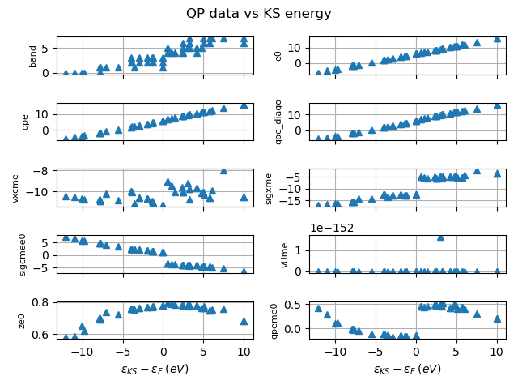

This example shows how to visualize the QP results stored in the SIGRES produced by the GW code (sigma run)
Out:
QPState(spin=0, kpoint=(0, 0, 0), band=0, e0=-6.1452119325595076, qpe=(-5.7191597612179432-0.02093047048366245j), qpe_diago=-5.4122956762538843, vxcme=-10.38758415376074, sigxme=-16.893304060427486, sigcmee0=(7.2386356750315226-0.036005659534835317j), vUme=0.0, ze0=(0.58131057045107903+0j))
import abipy.data as abidata
from abipy.abilab import abiopen
sigres = abiopen(abidata.ref_file("tgw1_9o_DS4_SIGRES.nc"))
# Printout of the QPState results
sigres.print_qps()
sigres.plot_qps_vs_e0()
qp = sigres.get_qpcorr(spin=0, kpoint=(0,0,0), band=0)
print(qp)
#qplist_spin = sigres.qplist_spin
#qplist_spin[0].plot_qps_vs_e0(title="QPState corrections of Si", exclude_fields="vUme")
sigres.close()
Total running time of the script: ( 0 minutes 0.913 seconds)